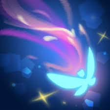
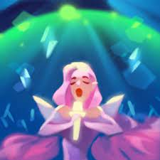
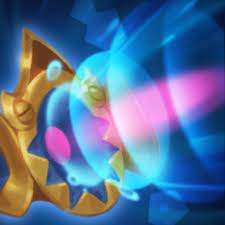
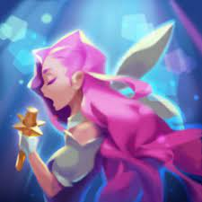
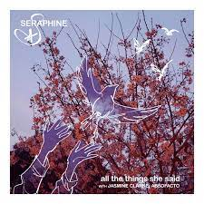
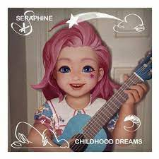
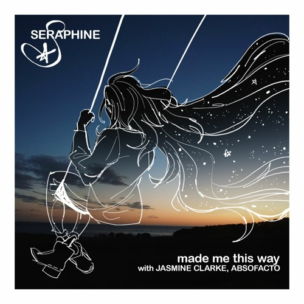
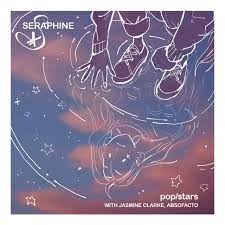
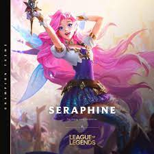

Séraphine
Introduction
Bienvenue sur la page de présentationt de séraphine, de l'univers de league of legends. Cette page regroupe toute les informations sur le personnage séraphine. Une fois la lecture terminé, vous allez l'adorer
League of legends
Séraphine est une enchanteuse/mage se jouant sur la voie du millieu, du bas, ou support. Connu dans tout piltover et zaun, séraphine use de sa voix pour répendre la joie sur le chant de bataille. Séraphine a des compétences polyvalante, elle peut etre utilitaire pour ses alliées tout comme une puissante mage face a ses adversaires, en fonction de ses choix d'objects et de runes. Dans votre équipe séraphine vous rendra joyeux, en face séraphine vous compliquera la vie.
Lore
Chanteuse rêveuse, Séraphine est née de parent zauniens, la basse ville
Page du loreSkin
Sorts
COMPÉTENCE "PASSIVE": PRÉSENCE SUR SCÈNE
Toutes les trois compétences de base, les sorts de Séraphine résonnent et se lancent automatiquement une seconde fois. En outre, chaque fois qu'elle lance une compétence près d'un allié, elle crée une Note. Chaque Note augmente la portée de ses attaques de base et inflige des dégâts magiques supplémentaires en consommant la Note.
COMPÉTENCE "A": NOTE AIGUË

Séraphine projette une note pure qui inflige des dégâts magiques augmentés selon le pourcentage de PV manquants de la cible.
COMPÉTENCE "Z": SON AMBIOPHONIQUE

Séraphine utilise ses alliés proches dans une chanson, ce qui lui octroie à elle et ses alliés un bouclier et de la vitesse de déplacement supplémentaire. Si Séraphine a déjà un bouclier, elle peut soigner ses alliés proches et leur rend une quantité de PV proportionnelle au nombre d'alliés proches.
COMPÉTENCE "E": BATTEMENT

Séraphine lance une onde sonore puissante qui inflige des dégâts magiques aux ennemis et les ralentit sur une ligne. Les ennemis déjà ralentis sont immobilisés, et les ennemis déjà immobilisés sont étourdis.
COMPÉTENCE "R": BIS

Séraphine monte sur scène et projette une onde fascinante qui charme les ennemis et inflige des dégâts magiques. Tous les champions touchés (y compris les alliés) participent à la performance, ce qui augmente la portée de la compétence et confère aux alliés le maximum de Notes.
Monde réel
L'introduction de séraphine au sein de LOL a été faites d'une manière différente comparé aux différents champion, d'habitude les dévellopeurs introduisent les champions via une cinématique. Séraphine a été introduit via un compte twitter nommé seradotwav, crée le 26 juin 2020, se faisant passer pour une personne normale.
Pendant plusieurs mois le compte a simulé une vie sans que personne ne le sache sa réelle identité. Petit à petit des internautes se sont rendue compte que le compte n'était pas tout a fait "normal", les suspicions se sont élevé le 17 juillet 2020 lorsque le compte sortie une musique nommé "Childhood Dreams" , une musique avec une chanteuse talentueuse, ce qui amenait plus de soupons, une aussi belle musique n'est pas faite par n'importe qui. Le compte publier également des photos de séraphine la représentant dans la vraie vie (des photos de la vraie vie avec des dessins d'une séraphine qui semblait réel), le style ressemblait beaucoup au style utilisé par riot games, les créateurs de league of legends.
C'est le 22 août 2020 que les doutes fût enlevé, lorsque séraphine posta sa propre version du titre pop star de KDA, un groupe virtuel créer par riot games. Petit à petit séraphine montat en popularité jusqu'à annoncer une collaboration avec KDA sur une toute nouvelle musique MORE, quelques temps après, le champion sortit sur league of legends suivit de 3 skins :
Seraphine Indé, représentant séraphine à ses début de la musique, quelqu'un s'entrainant seule dans sa chambre sans vraiment de popularité
Seraphine étoile montante représente lui séraphine faisant ses début dans la popularité, après les début de ses musiques
Seraphine SUPERSTAR, représentant séraphine pendant sa collaboration avec le groupe KDA, la forme finale de sa popularitéMusique
Séraphine  All the thing she said Vues : 3.2M Reprise Genre : pop/electro-rock 26 sept. 2020  Childhood dream Vues : 4.6M Reprise Genre : pop 25 sept. 2020  Made me this way Vues : 2.6M Reprise Genre :pop/R&B 16 oct. 2020  Pop star Vues : 2.7M Reprise Genre :pop 25 sept. 2020  Seraphine theme Vues : 2.7M Originale Genre : electro-pop 29 oct. 2020 Liens
Début de la page